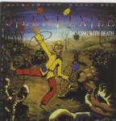

Home Artist links Label link

| Artist: | Silent Exile |
| Title: | Dancing With Death |
| Label: | Naivlys Music CD SE0001 |
| Length(s): | 49 minutes |
| Year(s) of release: | 2000 |
| Month of review: | 09/2000 |
Line up
Chriss J.Y. - vocals
Fabrice Blanchet - guitars
Cedric Rioux - keyboards
Sylvain Gagnon - bass
Denis Ainsley - drums
Tracks
| 1) | The Brain Dance | 0.46
|
| 2) | Walls Of Society | 6.43
|
| 3) | Stratosphere | 8.12
|
| 4) | Broken Dreams | 4.15
|
| 5) | On The Hill | 5.52
|
| 6) | Glase Maakerstraat | 8.02
|
Images of war
| 7) | Thunder On Ashland | 6.58
|
| 8) | Silent Witness | 7.51
|
Summary
A progmetal band from Quebec with their debut.
The music
The Brain Dance is the weird opener to this album. The band members all shouting
and laughing, gibbering is more like it. After 0.46 we move into the music,
which is Walls Of Society. The keyboard sound is very bombastic in the
opening, but the wo-wo-wo's of the singer are a bit too cliche here. In the
vocal part the music is more typically progmetal, hard and complicated, but
the keyboards continue to give a melodic tinge to the music and the chorus
is positively catchy. The singer has an okay voice, and his slight French accent
is apparent but not disturbing. The intermezzo is keyboards dominated and because
of that very bombastic. In this way, the typical progger is more prone to like
the style of this band, which at times reminds me of Egdon Heath on Nebula.
However, the music is a bit more forceful, more metallic and also borrows a lot
from the current progmetal bands, especially with the dark overtones. PArt of
their music might even remind some of Faith No More, particularly where the
breaks are more prominent and the bass is loud. A busy track with the keyboars
giving the music a more majestic and melodic appearance. The keys are sometimes
used to emulate the orchestral leanings. Stratosphere is with 8.12 the longest
single track on the album. The lyrics to this track are certainly not very happy,
and the song opens quite sadly. The vocals stay quite subdued, although later
they tend to be more outspoken and we even have some harmony singing. The vocals
are sung a bit hazily on this track, but there's certainly some nice melodic
on the guitars in this track as well as some more complex passages ending
in a very up-tempo rhythm guitar passage. In this way the music gains momentum.
Strong bombasm once again. I do have the feeling that the sound is not as clear
as it could have been, but even if that is the case, it is not really disturbing.
More important are the terribly catchy melodies that pop up here and there,
very good. Broken Dreams opens with melodic guitar and keyboards, like the
previous tracks making for a compelling combination. It is too bad that the
vocals are not very well articulated, although they do have the advantage of
being quite emotional (comparable to the vocals of the Dutch band Marathon).
Again, the music is quite catchy in the chorus, but without becoming
superficial. On The Hill opens up-tempo with rolling drums, heavy guitars and
involved, but in a way somewhat slurry vocals of Chriss J.Y.
At some point, the next track Glase Maakerstraat is spelled Glasemaaker Straat.
I guess a combination of both Glasemaakerstraat is best. In fact, the title is
then remarkable an old Dutch version of something that translates as
"Glassmakerstreet". I do wonder where they got this title. The track itself then:
after a rather weird opening, the music becomes the now well-known mix of
bombastic keyboards and guitars that we have already heard a few times before.
A very good thematic guitar solo in this track, supported by the keyboards.
In the vocal parts it is good to have the lyrics with the music, because it
becomes quite hard to understand the singer here.
The last track is Images Of War split into two parts. The first of these
is Thunder On Ashland, opening in a epic way with a striking melody on
the keyboards enriched by some out drawn vocals. After an orchestral keyboard
solo the vocals become more menacing (think Faith No More). After a passage
of percussive piano playing it is time for some variation in the rhtyhm
department. A bit unrestul here. The second part seems heavier, weirder with
its disjointed and discordant opening and firing guns. The music is also more
funky and less melodic and the vocal lines also follow this line.
Later on we go back to the more typical style of the band with subtle
pace changes and whispered, spoken vocals.
Quite a few times, the lyrics do not fit well to the music.
Conclusion
In a way the progmetal of this band sounds very live: a busy, organic sound
to be contrasted with music where the instruments are more productionally
separated. Maybe a little more of the latter would do the music good, now
it tends to come over a bit muddy. However, there is no real need for this,
to make the enthusiastic music of this progmetal come over well, because
the band writes good compositions with both an eye for melody (often in the
keyboards), loudness (often in the guitars) as well as complexity (rhythm section)
keeping both camps (proggers as well as metal lovers) satisfied. The music
is often very bombastic. The vocals are emotional, but I think a clearer recording
of the vocals might make the music sound more compact, less blurry. A nice
debut with catchy tracks lacking maybe a bit in variety. A few parts where the
music becomes a bit more quiet would also help in my appreciation. Compelling
progressive rock with metal influences or vice versa, it doesn't really matter
much how you see it. The result is satisfactory. Let us hope they haven't used
up all their good melodies.
© Jurriaan Hage